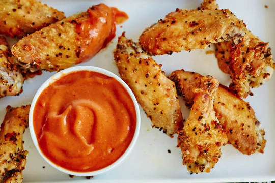

Directions

- Whisk the salt, pepper, garlic powder, and lemon zest together in a large bowl.
- Toss the wings in the spice blend, using your hands to make sure each wing is thoroughly and evenly coated.
- Place on a large rimmed baking sheet or in a large casserole dish in a single layer. The wings can be snug and touching each other. Cover with plastic wrap and refrigerate overnight or for up to 24 hours.
- Arrange 2 racks to divide the oven into thirds and heat to 325°F. Line 2 large rimmed baking sheets with parchment paper or foil.
- Divide the chicken wings between the baking sheets, spacing them evenly and in a single layer. Bake for 30 minutes.
- Increase the heat to 450°F and roast for 15 minutes. Flip the wings and roast until the skin is very crispy and brown on both sides, about 15 minutes. Serve immediately.
Link to the Orginal Recipe!!